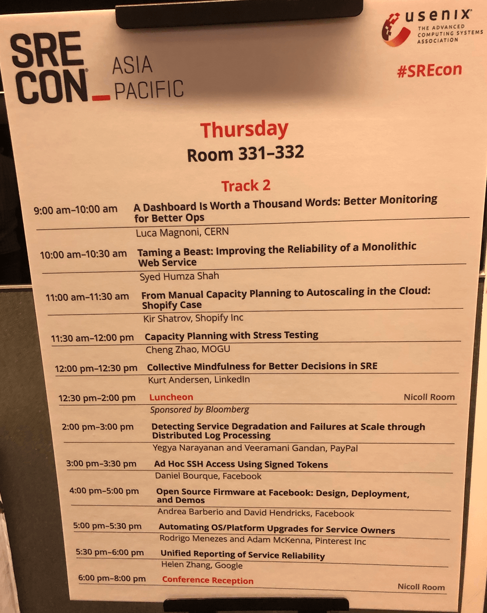
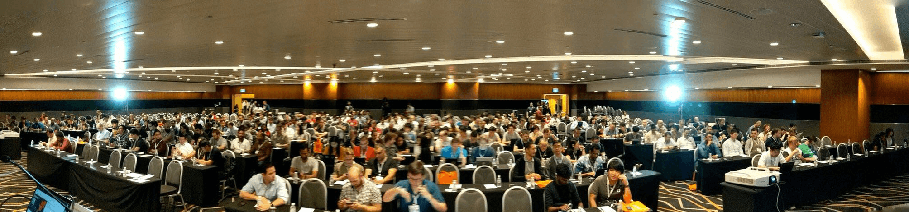

- 00 开篇词 带给你不一样的运维思考.md.html
- 01 为什么Netflix没有运维岗位？.md.html
- 02 微服务架构时代，运维体系建设为什么要以应用为核心？.md.html
- 03 标准化体系建设（上）：如何建立应用标准化体系和模型？.md.html
- 04 标准化体系建设（下）：如何建立基础架构标准化及服务化体系？.md.html
- 05 如何从生命周期的视角看待应用运维体系建设？.md.html
- 06 聊聊CMDB的前世今生.md.html
- 07 有了CMDB，为什么还需要应用配置管理？.md.html
- 08 如何在CMDB中落地应用的概念？.md.html
- 09 如何打造运维组织架构？.md.html
- 10 谷歌SRE运维模式解读.md.html
- 11 从谷歌CRE谈起，运维如何培养服务意识？.md.html
- 12 持续交付知易行难，想做成这事你要理解这几个关键点.md.html
- 13 持续交付的第一关键点：配置管理.md.html
- 14 如何做好持续交付中的多环境配置管理？.md.html
- 15 开发和测试争抢环境？是时候进行多环境建设了.md.html
- 16 线上环境建设，要扛得住真刀真枪的考验.md.html
- 17 人多力量大vs.两个披萨原则，聊聊持续交付中的流水线模式.md.html
- 18 持续交付流水线软件构建难吗？有哪些关键问题？.md.html
- 19 持续交付中流水线构建完成后就大功告成了吗？别忘了质量保障.md.html
- 20 做持续交付概念重要还是场景重要？看笨办法如何找到最佳方案.md.html
- 21 极端业务场景下，我们应该如何做好稳定性保障？.md.html
- 22 稳定性实践：容量规划之业务场景分析.md.html
- 23 稳定性实践：容量规划之压测系统建设.md.html
- 24 稳定性实践：限流降级.md.html
- 25 稳定性实践：开关和预案.md.html
- 26 稳定性实践：全链路跟踪系统，技术运营能力的体现.md.html
- 27 故障管理：谈谈我对故障的理解.md.html
- 28 故障管理：故障定级和定责.md.html
- 29 故障管理：鼓励做事，而不是处罚错误.md.html
- 30 故障管理：故障应急和故障复盘.md.html
- 31 唇亡齿寒，运维与安全.md.html
- 32 为什么蘑菇街会选择上云？是被动选择还是主动出击？.md.html
- 33 为什么混合云是未来云计算的主流形态？.md.html
- 35 以绝对优势立足：从CDN和云存储来聊聊云生态的崛起.md.html
- 36 量体裁衣方得最优解：聊聊页面静态化架构和二级CDN建设.md.html
- 37 云计算时代，我们所说的弹性伸缩，弹的到底是什么？.md.html
- 38 我是如何走上运维岗位的？.md.html
- 39 云计算和AI时代，运维应该如何做好转型？.md.html
- 40 运维需要懂产品和运营吗？.md.html
- 41 冷静下来想想，员工离职这事真能防得住吗？.md.html
- 42 树立个人品牌意识：从背景调查谈谈职业口碑的重要性.md.html
- 划重点：赵成的运维体系管理课精华（一）.md.html
- 划重点：赵成的运维体系管理课精华（三）.md.html
- 划重点：赵成的运维体系管理课精华（二）.md.html
- 新书 《进化：运维技术变革与实践探索》.md.html
- 特别放送 我的2019：收获，静静等待.md.html
- 结束语 学习的过程，多些耐心和脚踏实地.md.html
- 捐赠
特别放送 我的2019：收获，静静等待
你好，我是赵成。好久不见！
还有一周就是2020年的春节了，2019年就真的结束了。最近忙完各种年终总结、年会，终于有时间总结下自己的2019了。我把这个小复盘发布在公众号上，也想在这里分享给你。
我2019年定目标的时候，并没定多大的目标，主要是害怕最后打脸，所以就定了要做三件事情：健身、英语和写字。看到这三个目标，你是不是会心一笑，谁还没立过这样的Flag呀！
现在看，我还真是做到了，而且还超额了。
不过，三件小事，虽然很小，但是因为坚持了一年，却给我带来了很大的改变，也是19年回顾下来，给我带来最大成就感的事情。
健身
到目前为止，健身坚持了一年半了，每周2～3次，每次1小时左右，有时候时间紧张，10～15分钟HIIT。
18年9月份开始跟教练锻练，到19年3、4月份开始，体重就开始降，一开始是小肚子没了（八块腹肌还没出来），再到后来胸挺了（胸下垂得到有效缓解），屁股也翘了，肩膀有棱角了，背也比之前直了，总之身材变好了，穿衣服也好看了。
好几次出去演讲，除了被问专业问题之外，竟然还会被人主动问到你是不是在健身，身材保持这么好，你是怎么做到的。每当被问到这样的问题，就非常开心，发自内心的喜悦。
其实，19年3月份之前，我也练了差不多快半年，这半年变化不大，反而因为健身消耗比较大的原因，吃得比较多，体重不降反升，差不多长了5、6斤，特别是肚子，比原来还粗一圈。
说实话，那个阶段，很长一段时间都觉得非常挫败，练了这么长时间没什么效果，真的都想放弃了。
但是，变化就是在几乎要放弃，但是又想再继续坚持一下的纠结点上出现了。我自己都不敢相信，这个临界点出现后，20天不到，体重就降了10多斤，到目前为止轻了十五六斤，稳定在69公斤左右，夏天的时候会更轻一些。
当然，健身带来的好处不止身材好，精神状态也好很多。之前不午休，下午就崩溃，现在反应也没这么大。之前出差折腾一下，就很疲惫，经常会头痛，要花大半天调整，现在没有任何反应，可以持续地保持非常好的精神状态。
9月去敦煌走了次戈壁，3天90公里，在每天睡眠只有4个小时的情况下，体力精力已然充沛，毫无压力。
还有，健身还要特别注意就是要控制饮食，所以健身后碳酸饮料基本不碰，特别甜的东西不碰，多吃蔬菜水果和高蛋白食物，早睡早起，生活状态也变地更加健康。
有时候我跟人开玩笑说，我现在可以做到想胖就胖，想瘦就瘦，其实我现在真的可以做到，秘诀就在于自律带来的“体重”自由。
这是坚持带来的第一个小成就。
英语
坚持了一年的英语学习，每周两次外教口语课，每天读几篇英文新闻和文章，听个5～10分钟英文新闻或演讲或访谈，坚持读了四本英语原版图书，看得比较慢，但是一点点都能看懂了，慢慢地速度也提上来了，虽然做不到一目十行，但是相对熟悉的内容范围内，一目2～3行还是可以的。
其实最早触发我重新捡起英语的原因是，我想申请海外的国际会议演讲。所以19年初尝试报名了SRECon亚太区演讲，申请的Proposal在好友的指导和帮助下竟然通过了。这个会议的通过率差不多是10%，当时真的很兴奋。
6月份去新加坡做了第一次英文演讲，终于走向国际舞台了，跟LinkedIn、Facebook和Google的大牛们同台了，当时我的外教老师给我发了条消息：The world is our stage（世界才是我们的舞台）。
哈哈，还是忍不住开心下。

不过，过程我不是很满意，因为那个时候无论在发音、节奏、流畅和精准表达上，都差很多，只能算是一次当场的英文表达，并不能算演讲。
当时在会场上有很多国家和地区的工程师，口音都不一样，特别是印度口音，完全follow不上，当时被一个印度的工程师提问，直接给问懵逼了，好在有朋友在，临时给救了场。
Anyway，这算是一个美好而有意思的开始。

再说件特别的事情。这次过去，还见到了我20多年没见的高中班主任，当时给过我莫大的鼓励和启蒙的老师，很多过往多年的记忆也一点点被勾起。
原本一个很小的期望，去做一场国际演讲，然后打开了英语学习之门，然后体会到了阅读英文原版图书和与国际友人交流的乐趣，也更加开拓了视野，见到了许久未见的故人。
所以，一件事情，想做就去做，做了就可能会带来完全意想不到的惊喜。
英语学习的积累，跟健身一样，靠一点一滴日积月累。有时候单词不认识，长句子理不清逻辑，听力跟不上，表达想不到合适的单词，真的是想快也快不起来。
咋办呢？只能一个单词一个单词地去查词典，反复地读和背，长句子反复读，把主谓宾一个个挑出来，再去看修饰部分，再理解再读，听力听不懂就反复一遍遍听，看原文，看懂了，再听，说不出来，就换啰嗦的方式表达，不行就Chinglish表达，完了再找地道的英文场景的表达方式来修正，反正就是使劲往外憋。
没办法，就是一点点磨。所以，我觉得真正的学习和能力提升是永远没有捷径的，过程一定是枯燥和乏味的。
其实现在也没做到流利表达，但是相比6月份，可以自信地讲，如果我再去讲一次，一定要比6月份好过N多倍。所以，争取20年再去申请一个英文Topic，做到比6月份更优秀。
写字
2017～2018我写了咱们这个专栏，19年就想继续沉淀自己的一些思考和收获。我看了下，19年我写了30多篇公众号文章。后来发现有些东西想到了就想写，但并不适合放到公众号里碎碎念，所以后来又开了知识星球，一年下来，写了360+篇，每篇300～800字。
所以，从量上看，我觉得ok。我翻了下公众号文章，特别是上半年写的几篇，还是下了功夫，也带来比较大的阅读量，特别是有几篇转来转去，阅读量是我公众号内部的好几倍了。
公众号的文章是收集信息并整理后输出的，有一定深度，自然阅读量也会不错，所以从这个角度讲，虽然有了星球可以随时写，但是今年在写作的思考深度上其实是有点偷懒了，公众号发的文章偏少就是这个特征，这里是要反思和改进的。
所以，2020年，我会继续回到极客时间，会有一个小专栏输出，可以期待下。
三件小事的总结
无论是健身、学英语、还是写文章，我当初并没有立什么具体的Flag，没有了Flag的压力，我反而没有了太多的压力，完全当兴趣和小挑战来做，就是坚持，尽量不中断。
而且每次努力做到跟上一次一样是最低要求，如果能做到比上一次好就更棒了，何况我健身将近半年，还有点倒退，将近半年，连及格都没做到，但是好在没放弃，反而最终是变得越来越好，甚至超出我原来自己心目中的想象。
后来，我也想明白一个理儿，就是无论健身还是英语，都是我对我自己的期待，我做得好与不好，只对我自己有影响，并不影响别人怎么样，当然其实别人也并不care你身材好不好，能不能张口说漂亮的英语，关人家啥事呢。
我想做的只是改变我自己，我没有必要非得立个Flag给别人看。
所以，在个人成长上，努力做好自己，坚持对个人有益的一些小事，努力做到比上一次好一点点，我就觉得已经受益匪浅了。
今年得到年会上，罗胖第一张PPT分享就是贝聿铭的名句：“我一直沉浸在如何解决我自己的问题之中”，很有共鸣。
健身给我带来了更多自信，身体好心情也不会太差，精神更充沛的情况下，也保证了我有更充足的精力做更多其它有挑战性的事情，英语可以帮我打开一个新的空间，比如看英文原版书，跟国际友人交流，去国外演讲，阅读和写字，让我可以结交和认识更多志同道合的朋友，也让更多的认识我、了解我，而且还有机会到更大的内容平台上是展示，本身就是个品牌建设过程。
所以，坚持的力量在一个人身上总会以某种方式呈现出来，比如，别人会主动问，你的身材这么好，是怎么练出来的。
工作
还是聊聊跟云的关系，18年的时候，我们把IaaS层的网络和主机迁到了云上，当时虚拟机、容器、还有很多中间件仍然是自建自运维。19年7月份，我们就把这些也全部迁移掉了，能用云的都用云，把上云做得更加彻底，团队精力上也可以更多地放在业务建设上，我也有更多的精力去探索一些新方向，比如5G、边缘计算、视频技术等。
19年仍然有一些机会接触不同行业的同行，讨论和学习IT技术，眼界也更宽了些，也发现自己的不足，就是对某些领域的描述和呈现提炼不够，与不同级别的专家沟通，其实是需要不同层次的语言和呈现方式的，这块后续在工作中要提升。
最后，2020年的计划
工作上全力以赴，仍然坚持健身、英语、阅读和写字这几件小事，几件小事坚持了一年，如果能够坚持2年、3年，我觉得其实也是不小的成就。
嗯，仍然不立Flag，每天或每周认真坚持几件事就好了。
转一个前两天看到的句子，作为对新一年的期待：
人生，难以量化，收获，静静等待。
最后，你的2019是怎样的？对2020又有怎样的期待？来留言区一起聊聊吧！
© 2019 - 2023 Liangliang Lee. Powered by gin and hexo-theme-book.